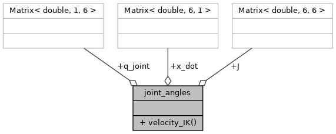

#include <joint_angles.hpp>
Collaboration diagram for joint_angles:

Public Member Functions | |
| Eigen::Matrix< double, 6, 1 > | velocity_IK (Eigen::Matrix< double, 1, 6 > q_joint, Eigen::Matrix< double, 6, 1 > x_dot, Eigen::Matrix< double, 6, 6 > J) |
| Finds the velocity inverse kinematics. More... | |
Public Attributes | |
| Eigen::Matrix< double, 6, 1 > | x_dot |
| Eigen::Matrix< double, 6, 6 > | J |
| Eigen::Matrix< double, 1, 6 > | q_joint |
Member Function Documentation
◆ velocity_IK()
| Eigen::Matrix< double, 6, 1 > joint_angles::velocity_IK | ( | Eigen::Matrix< double, 1, 6 > | q_joint, |
| Eigen::Matrix< double, 6, 1 > | x_dot, | ||
| Eigen::Matrix< double, 6, 6 > | J | ||
| ) |
Finds the velocity inverse kinematics.
initial joint angles
- Parameters
-
q_joint Initial joint angles x_dot The desired end effector velocity vector J The panda arm jacobian matrix
Here is the caller graph for this function:

Member Data Documentation
◆ J
| Eigen::Matrix<double, 6, 6> joint_angles::J |
◆ q_joint
| Eigen::Matrix<double, 1, 6> joint_angles::q_joint |
Jacobian matrix
◆ x_dot
| Eigen::Matrix<double, 6, 1> joint_angles::x_dot |
end effector velocity vector
The documentation for this class was generated from the following files:
- libs/joint_angles/joint_angles.hpp
- libs/joint_angles/src.cpp